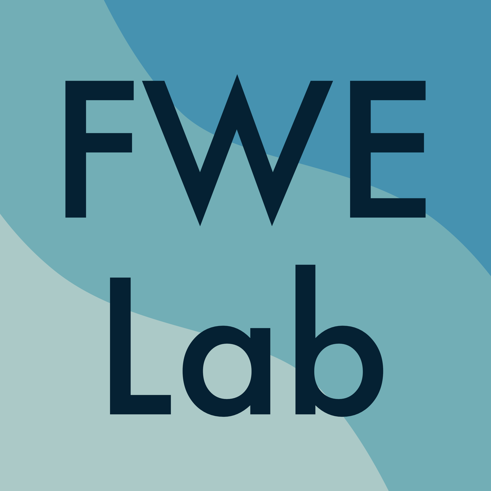

Latest update - 16 February, 2025
山田 太平 / Taihei Yamada,
Ph.D.
E-mail: thymd8 [at] gmail.com

Assistant Professor, Freshwater Ecology Lab.
National Fisheries
University, Japan Fisheries Research and Education Agency
国立研究開発法人水産研究・教育機構 水産大学校 生物生産学科
淡水生態学研究室 助教
生物多様性保全、生物間相互作用、水圏生態学
Biodiversity
conservation, Biological interactions, Aquatic ecology
| 2024.04 – Present | Assistant Professor | National Fisheries University, Japan Fisheries Research
and Education Agency, Japan 国立研究開発法人水産研究・教育機構 水産大学校 生物生産学科 |
| 2023.10 – 2024.03 | PostDoc Position | Faculty of Environmental Earth Science, Hokkaido
University, Japan 北海道大学 大学院地球環境科学研究院 |
| 2018.09 – 2020.08 | Assistant Curator | Higashitaisetsu Museum, Japan 上士幌町 商工観光課 ひがし大雪自然館 |
| 2020.04 – 2023.09 | Ph.D. | Grad. Agriculture, Hokkaido University,
Japan 北海道大学 大学院農学院 |
| 2017.04 – 2019.03 | M.Agr. | Grad. Agriculture, Hokkaido University,
Japan 北海道大学 大学院農学院 |
| 2013.04 – 2017.03 | B.F.Sc. | Sch. Marine Biosciences, Kitasato University,
Japan 北里大学 海洋生命科学部 |
| 2010.04 – 2013.03 | Okinawa Prefectural Yaeyama HS,
Japan 沖縄県立八重山高等学校 |
| 2024.07 – 2026.03 | JSPS KAKENHI (Grant-in-Aid for Research Activity
Start-up) 日本学術振興会 科学研究費助成事業 研究活動スタート支援 |
| 2023.10 – 2024.03 | JSPS Research Fellow PD 日本学術振興会 特別研究員-PD |
| 2022.04 – 2023.09 | JSPS Research Fellow DC2 日本学術振興会 特別研究員-DC2 |
| 2021.10 – 2022.03 | Hokkaido University DX Doctoral
Fellowship 北海道大学 DX 博士人材フェローシップ |
| Data handling and analysis using R | |
| GIS | |
| Fish surveys |
|
| Identification of aquatic invertebrates | |
| Driver’s license for large motorcycles |
*Corresponding author, †Equal contribution
| in review | Yamada
T*, Koizumi I, & Nakamura F. Seasonal changes in the ratio of congeneric charrs in northern Japanese tributaries with different temperature regimes. Preprint |
| in review | Yamada
T* et al. Temporal responses of the macroinvertebrate community structure to sediment replenishment downstream of a dam. |
| in prep. | Yamada
T* et al. Fragmentation status in spawning habitat of anadromous salmonids. |
| 2024 | Yamada
T*, Nobetsu T, Urabe H, & Nakamura F. Invasion status of hatchery-origin pink salmon in an unstocked river at the Shiretoko World Natural Heritage Site in northern Japan. Journal of Fish Biology 104(5): 1633–1637. Link |
| 2024 | Yamada
T*, Urabe H, & Nakamura F. Pink salmon productivity is driven by catchment hydrogeomorphology and can decline under a changing climate. Freshwater Biology 69(3): 376–386. Link |
| 2023 | Nakahashi H†, Yamada T*†,
Ishiyama N, & Nakamura F. Ecological value of gravel pit ponds for floodplain wetland fish. Freshwater Biology 68(2): 340–348. Link |
| 2022 | Yamada
T*, Katahira H, Miura K, & Nakamura F. Relationship between salmon egg subsidy and the distribution of an avian predator. Ecology and Evolution 12(12): e9696. Link |
| 2022 | Yamada
T*, Urabe H, & Nakamura F. Diel migration pattern of pink salmon fry in small streams. Journal of Fish Biology 100(4): 1088–1092. Link |
| 2020 | Yamada
T*, Koizumi I, Urabe H, & Nakamura F.
Temperature-dependent swimming performance differs by species: Implications for condition-specific competition between stream salmonids. Zoological Science 37(5): 429–433. Link |
| 2021 | 三浦一輝, 崎山智樹, 宇久村三世, 山田太平.
知床半島河川において採集したコガタカワシンジュガイ. 斜里町立知床博物館研究報告 43: 1–4. (non-refereed) |
| 2020 | 山田太平, 三浦一輝.
北海道豊頃町および新得町におけるカワシンジュガイ属（Margaritifera）の採集記録. ひがし大雪自然館研究報告 7: 41–45. (non-refereed) |
| 2019 | 山田太平, 三浦一輝.
北海道十勝地方におけるカワシンジュガイ（Margaritifera laevis）とコガタカワシンジュガイ（M. togakushiensis）の生息情報. ひがし大雪自然館研究報告 6: 9–12. (non-refereed) |
| 2024/12 | 山田太平.
知床半島におけるカラフトマスの再生産状況. 第45回魚類系統研究会, 北海道札幌市, 口頭. |
| 2024/12 | 吉野裕生, 植村洋亮, 山田太平, 小泉逸郎.
底生無脊椎動物群集の湧水・非湧水河川比較. 第45回魚類系統研究会, 北海道札幌市, 口頭. |
| 2024/03 | 山田太平, 卜部浩一,
中村太士.
カラフトマスの再生産効率に対する撹乱の影響は流域の地形によって左右されるか？ 日本生態学会第71回全国大会, 神奈川県横浜市, ポスター. |
| 2023/07 | Ryota Fujimura, Junko Morimoto, Taihei Yamada, Takashi
Ono, Futoshi Nakamura. Considering deer behavior at multiple scales for restoring broadleaved forest. The 11th Annual International Association for Landscape Ecology (IALE) World Congress, Nairobi, Kenya, Oral. |
| 2023/03 | 山田太平, 卜部浩一,
中村太士. 溯河性サケ科魚類の再生産効率と流域地形特性の関係. 令和5年度日本水産学会春季大会, 東京都港区, 口頭. |
| 2023/03 | 山田太平, 片平浩孝,
三浦一輝, 中村太士. サケの産卵は鳥類捕食者の分布を規定するか？ 日本生態学会第70回全国大会, オンライン, ポスター. |
| 2022/12 | 山田太平, 卜部浩一,
中村太士.
流域の地形特性は溯河性サケ科魚類の再生産効率を規定するか？ 第15回サケ学研究会, 北海道札幌市, 口頭. |
| 2022/12 | 山田太平, 卜部浩一,
中村太士.
溯河性サケ科魚類の再生産効率は流域の地形特性によって規定される. 第43回魚類系統研究会, 北海道札幌市, 口頭. |
| 2022/10 | Taihei
Yamada, Hirokazu Urabe, Futoshi Nakamura. A broad-scale prediction of reduction in spawning habitats for salmonids by dams. IYS Synthesis Symposium, The Westin Bayshore, Vancouver, Canada, Poster. |
| 2022/03 | 山田太平, 卜部浩一,
中村太士. ダムによるサケ科魚類の産卵環境減少の広域的予測. 日本生態学会第69回全国大会, オンライン, ポスター. |
| 2021/12 | 早津栄里, 岩崎巧実, 片平浩孝, 山田太平, 宇久村三世,
三浦一輝. サケと共に暮らす: 知床ペレケ川におけるカワガラスの卵食い. 第42回魚類系統研究会, 北海道札幌市, 口頭. |
| 2020/03 | 山田太平, 小泉逸郎,
中村太士. 河川性サケ科魚類の水温依存的な種間競争: 季節変化を考慮した野外検証. 日本生態学会第67回全国大会, 愛知県名古屋市, ポスター. |
| 2018/03 | 山田太平, 小泉逸郎,
卜部浩一, 中村太士. 河川性魚類の分布規定要因: 遊泳能力と種間競争を考慮した検証. 日本生態学会第65回全国大会, 北海道札幌市, ポスター. |
| 2020/07/04 | 自然観察会: 淡水魚編 (市民向け観察会, 講師). ひがし大雪自然館, 上士幌. |
| 2020/06/30 2020/07/02 |
上士幌学: 水生昆虫と水質調査 (高校生向け講義, 講師). 北海道上士幌高等学校, 上士幌. |
| 2019/12/15 | 魚類学: 種同定とスケッチの基礎 (市民向け講座, 講師). ひがし大雪自然館, 上士幌. |
| 2019/07/14 | 自然観察会: 淡水魚編 (市民向け観察会, 講師). ひがし大雪自然館, 上士幌. |